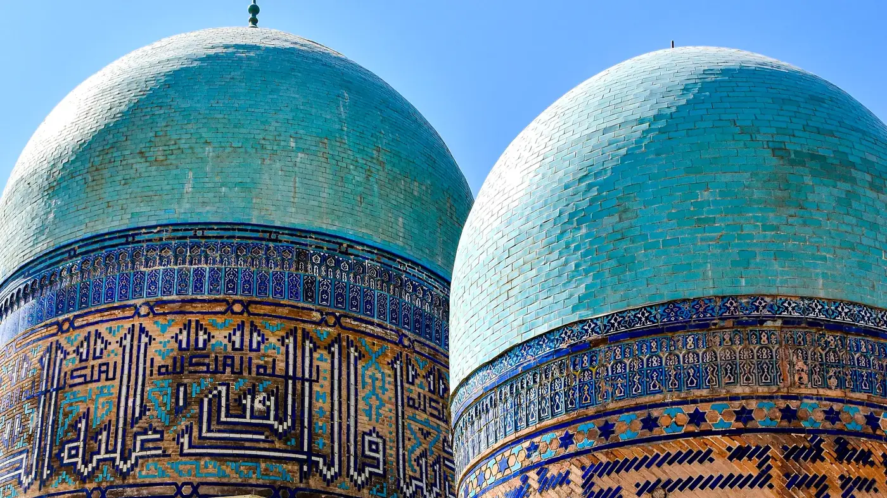

Melhor preço1 dia
01
Melhor preço1 dia
01Tour por Tashkent
TashkentUm dia na capital: Hazrati Imam, bazar Chorsu, o metrô e a praça Amir Timur
a partir de…por pessoa
Ver o passeio→
Passeios privados e em pequenos grupos pelo Uzbequistão — cúpulas turquesa de Samarcanda, Bukhara e Khiva, acampamentos de iurtas no deserto, lagos de montanha e a hospitalidade mais calorosa. Nós planejamos tudo, você só viaja.
Saiba mais sobre o UzbequistãoComece pequeno ou faça o roteiro completo — todo passeio inclui guia credenciado, transporte e nosso suporte 24/7.
Perfeitos para conhecer o Uzbequistão pela primeira vez — de um dia em Tashkent a quatro dias com Samarcanda, Bukhara ou as montanhas.
Melhor preço1 dia
01Um dia na capital: Hazrati Imam, bazar Chorsu, o metrô e a praça Amir Timur
 Melhor preço3 dias
02
Melhor preço3 dias
02A capital e o Registan em três dias, no trem rápido Afrosiyob
 Melhor preço4 dias
03
Melhor preço4 dias
03Três grandes cidades da Rota da Seda em quatro dias de trem rápido
 Melhor preço4 dias
04
Melhor preço4 dias
04Chimgan, Amirsoy e o lago Charvak, mais o Registan — quatro dias
Nossos programas favoritos: a história completa da Rota da Seda, hotéis superiores e cada detalhe organizado.
 Assinatura8 dias
01
Assinatura8 dias
01Khiva, Bukhara, Samarcanda e Tashkent — sai todo sábado de Khiva

Assinatura5 dias 02As duas joias da Rota da Seda em cinco dias
 Assinatura10 dias
03
Assinatura10 dias
03De Khiva a Samarcanda com uma noite em iurta no deserto
 Assinatura7 dias
04
Assinatura7 dias
04Ziyarat aos grandes imãs e mestres sufis
Não encontrou a viagem ideal? Criamos roteiros personalizados para casais, famílias e grupos.
Curtas sobre cidades, cultura e natureza — assista antes de viajar.
Vídeos do canal oficial do Comitê de Turismo do Uzbequistão e de mídias internacionais (Euronews, BBC, Insider, Eater) · Assistir no YouTube →
Datas de saída fixas para quem viaja sozinho e casais — escolha um grupo em inglês ou em russo, tudo organizado.
Qual idioma de guia é melhor para você?
Reserve um serviço avulso — guia, transporte, hotel, recepção no aeroporto ou eSIM — sem comprar um pacote completo.
 Guias credenciadosGuias locais profissionais para passeios urbanos, museus e viagens completas.→
Guias credenciadosGuias locais profissionais para passeios urbanos, museus e viagens completas.→ Transporte com motoristaCarro particular, van ou ônibus com motorista — traslados entre cidades, passeios urbanos e bate-voltas.→
Transporte com motoristaCarro particular, van ou ônibus com motorista — traslados entre cidades, passeios urbanos e bate-voltas.→ Reserva de hotelEncontramos e reservamos hotéis no seu orçamento — de pousadas a 5 estrelas.→
Reserva de hotelEncontramos e reservamos hotéis no seu orçamento — de pousadas a 5 estrelas.→ Recepção no aeroporto com motoristaUm motorista com placa com seu nome recebe você no desembarque e leva até o hotel.→
Recepção no aeroporto com motoristaUm motorista com placa com seu nome recebe você no desembarque e leva até o hotel.→ Recepção no aeroporto com guiaSeu guia recebe você no desembarque, ajuda com o chip e o câmbio e vai com você até o hotel.→
Recepção no aeroporto com guiaSeu guia recebe você no desembarque, ajuda com o chip e o câmbio e vai com você até o hotel.→ Grupos, eventos e MICEViagens corporativas, viagens de incentivo, conferências e grandes eventos em grupo.→
Grupos, eventos e MICEViagens corporativas, viagens de incentivo, conferências e grandes eventos em grupo.→ eSIM para o UzbequistãoInternet móvel desde o pouso — sem loja de chip e sem fila com passaporte.→
eSIM para o UzbequistãoInternet móvel desde o pouso — sem loja de chip e sem fila com passaporte.→Pessoas locais escolhidas a dedo. Você vê avaliações reais; reserva e paga com segurança pela Moviy Nomad.
Escolha lugares, noites, hotéis, transporte e guia — veja o roteiro no mapa e uma estimativa de preço na hora.
Começar →


Nossa equipe vive no Uzbequistão e conhece cada rua, cada guia e cada joia escondida.
Hotéis, trens, traslados, guias e ingressos — num pacote claro.
Comida halal, tempo para orações e ritmo confortável para famílias.
Guias que falam inglês e russo; turco e árabe sob pedido.
Sem taxas ocultas — você vê exatamente o que está incluído antes de reservar.
Uma pessoa real no WhatsApp ou Telegram durante toda a viagem.
Em 2,5 anos, nossa equipe da Moviy Travel organizou viagens para mais de 10.000 viajantes. A Moviy Nomad leva a mesma equipe, guias e motoristas a visitantes do mundo todo — operadora credenciada (DMC) no Uzbequistão: Khiva, Bukhara, Samarcanda, Tashkent e além.
✓Operadora credenciada — Comitê de Turismo da República do Uzbequistão, licença n.º 887333
Veja nossas viagens no Instagram @moviy_travel58 mil seguidores · mais de 600 posts com viagens e viajantes reais→Mensagens reais do grupo de conversa dos nossos viajantes, traduzidas do uzbeque.
Obrigada por todo o trabalho e carinho. Prometi a mim mesma viajar uma vez por ano — com vocês, junto com amigos e família.
Atendimento excelente: nosso motorista Nodirbek tratou todos como família e a longa estrada nem pareceu longa. Se ainda está pensando, vá — você não vai se arrepender.
Foi ainda melhor do que esperávamos. Reunir 500 pessoas e fazer tudo funcionar não é pouca coisa. Organizem mais viagens assim!
A semana passada foi inesquecível — talvez por ter sido minha primeira viagem. Voltei com ótimas impressões e lembranças de pessoas incríveis.
Fotos e histórias compartilhadas pelos nossos viajantes. Viajou conosco? Adicione a sua!
Ainda não há histórias — seja o primeiro a compartilhar.
Cidadãos de muitos países podem visitar o Uzbequistão sem visto ou com um visto eletrônico simples. Diga-nos sua nacionalidade e verificaremos as regras atuais.
A primavera (abril–junho) e o outono (setembro–outubro) são ideais para Samarcanda, Bukhara e Khiva. O verão é bom para as montanhas, o lago Charvak e o vale de Fergana; o inverno é tranquilo e barato.
Sim. Planejamos passeios privados para casais e famílias, além de viagens em grupo e programas para agências de viagem.
A maior parte da comida da região é halal. Também podemos planejar o programa conforme os horários de oração e as visitas a lugares sagrados.
Fale conosco no WhatsApp ou Telegram. Depois que você aprovar o programa, confirmamos a reserva e enviamos os dados para pagamento.
Sim. Oferecemos serviços receptivos e tarifas de parceiro para agências e grupos.
Escolha a forma que preferir — responderemos com ideias, um programa e um preço.
+998 97 542 77 99 · Maftuna Artikova